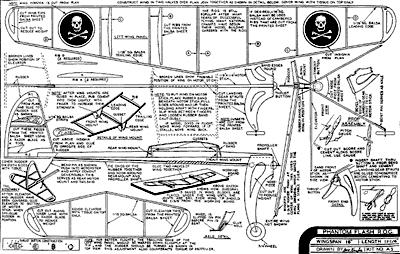

|
The Phantom Flash is a simple rubber powered ROG (Rise Off Ground) model, suitable for clubs hosting one design indoor low key competitions.
All necessary building notes will be found on the plan. Unfortunately there is scant detail about the propeller. A suitable balsa prop can be carved, or built from sheet. A 6 or 7" diameter prop would be a good start. Alternatively, a "commercial" plastic prop can be used. These can be found in many hobby shops separately, or as part of a beginner's model. I would recommend agressively scraping the prop with a razor blade to lighten it. Additional building advice can be found in the Introduction to Building and Flying Free Flight Model Aeroplanes. Before building the plan may need to be enlarged. The wing span should be 16 1/4" as indicated. |
To download a 180kb plan, click here
Copyright 2001, Thayer Syme. All rights reserved